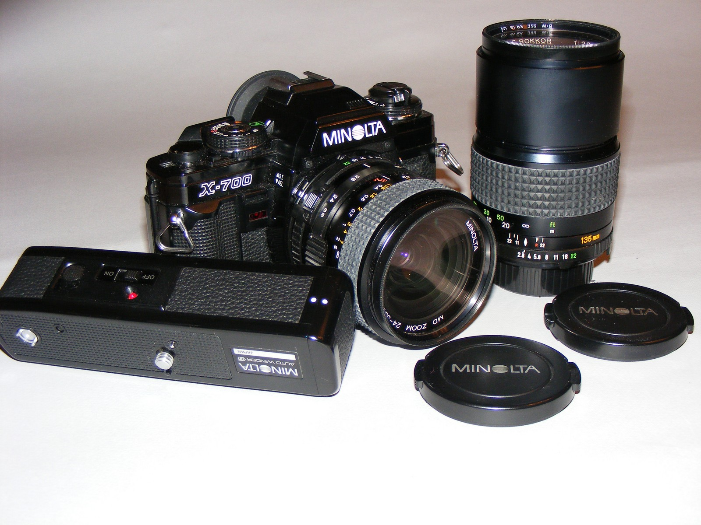
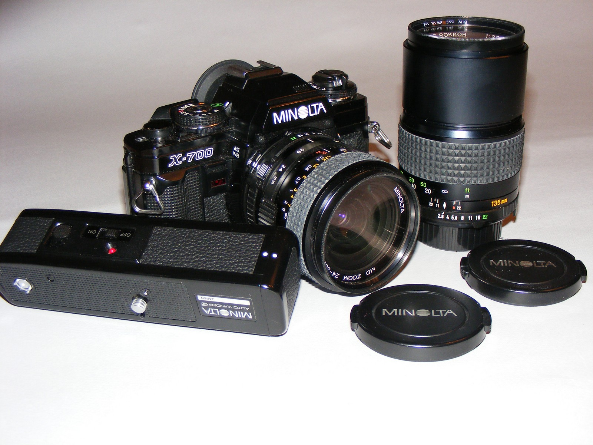

Welcome to Minolta X-700
The Minolta X-700 is a renowned 35 mm single-lens reflex film camera introduced in 1981. It offers advanced features and ease of use.
Explore its history, features, and more.
The Minolta X-700 is a renowned 35 mm single-lens reflex film camera introduced in 1981. It offers advanced features and ease of use.
Explore its history, features, and more.